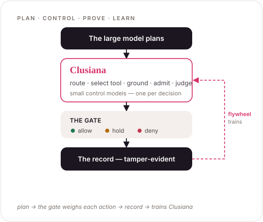

Research AI company
Frontier labs train models to be capable. We train them to be governable.
AI agents now take real actions — they move money, change infrastructure, touch customer data. Tulip Labs trains Clusiana: small models for multi-agent orchestration — the ones that decide whether an action may fire, whether a claim is grounded, whether a run went well — that no framework ships. They run on the open-source SDK that is the foundation for everything we build, which enforces every action before it runs, holds the risky ones for a person, and writes them to a record that fails verification if anyone edits it. The models and research are open. The SDK is open source.
$ pip install tulip-agents

One thesis
Agentic AI becomes real infrastructure only when what agents do is controllable, provable, and safe by construction. So we train Clusiana — the small models that run and control multi-agent orchestration — on the open-source SDK that is the foundation of everything: the runtime, the platform, the lab. One thesis at three layers of the stack, joined by a single spine — a tamper-evident record of every decision.
The runtime
The SDK is the foundation
The open-source SDK — tulip-agents — is the base everything builds on: the gate that decides whether an action runs, the hash-chained record, and the harness the Clusiana models plug into. It runs in-process, as a service for any language, and around the code in sandboxes. Placement is a detail; the gate and the record are the product.
The platform
Where a team defines its agents
Agents, playbooks, and skills as governed, versioned definitions — forkable, multi-tenant, with roles and sign-on, a live approval queue, and a signed audit a compliance team can export. Because the policy is part of the definition, an agent is safe the moment it exists.
Built and running privately in a dev cluster — Studio, the Registry, the gateway, and a first-party Firecracker sandbox.
The lab
We train Clusiana, the models for orchestration
Frontier labs train capability; we train control. Clusiana is a family of small, open-weight models for multi-agent orchestration — a model to route, select a tool, ground a claim, admit an action, and judge a run. Framework-neutral, small enough to run in the hot path and inside air-gapped walls, and specialized to each customer from their own record.
Each program asks one question a multi-agent framework leaves open — and answers it with a Clusiana model any framework can plug in, released open.
Grounding — when may an agent assert?
ShippedThe Clusiana grounding judge: a claim counts only with evidence above a set bar; otherwise the agent abstains. Published as GSAR (arXiv:2604.23366), the first Clusiana model shipped in the runtime.
Admission — when may an agent act?
In progressThe Clusiana admission classifier: the allow / deny / hold-for-a-person decision, made enforceable — and fast enough to sit in front of every tool call. A small open-weight action-risk model, with the dataset, recipe, and weights released open.
Evidence — how do you prove what an agent did?
Record shippedWhat separates a record from a log: hash-chained, signed, verification fails on any edit — specified canonically so a trail written in one language verifies in another.
Substrate — what does agent code run on?
Reported · upstreamThe substrate research behind Clusiana — the shared GPUs the models run on, understood and defended. A cross-process timing side channel fingerprints a co-tenant's model in about a second; learning to identify a model on the metal is what gave Clusiana its name and its ground truth. Two fixes merged upstream into vLLM, and an audit tool defenders can run.
Judgment — did the agent do well, for the right reason?
In developmentThe Clusiana trajectory evaluator: task completion, right-reason root cause, no wandering — scored over the same tamper-evident trace the gate wrote, so a passing score is evidence, not a screenshot.
The runtime · Apache-2.0
Tulip
Drop the admission gate around an action your agent already takes.
A refund, a host isolation, an account disable — it runs only after it clears policy, holds for a human when it matters, and lands on a tamper-evident audit trail you can replay. Wraps agents from LangChain, LangGraph, CrewAI, OpenAI Agents, LlamaIndex, and Google ADK — in Python and TypeScript, no rewrite. Fool the model; not the runtime.
# drop the gate around an action your agent already takes from tulip.control import Action, admit, ControlPolicy, AuditTrail, AdmissionError policy = ControlPolicy() # prod → human trail = AuditTrail() risky = Action(name="refund", asset="cust:4821", blast_radius=1, kind="payment", environment="production") try: await admit(risky, lambda: refund("cust:4821"), policy=policy, trail=trail) except AdmissionError as e: print(e.decision.outcome) # → "require_human"; refund NOT run # Held for a human, on the audit trail. Fool the model; not the runtime.
A typed grounding layer: partition an answer's claims into grounded / ungrounded / contradicted / complementary, score the support, and decide — proceed, regenerate, or replan.
The lab · P1 Grounding
GSAR
How do you know an AI's conclusion is actually supported by its evidence?
Often it isn't — every fact it cites is real, but the conclusion over-reaches. GSAR scores how well an answer's claims are grounded in the evidence behind them, then decides: proceed, regenerate, or replan. It's published, peer-readable, and the engine that makes the runtime's findings trustworthy.
A cross-process GPU timing side channel that fingerprints the inference engine and model on a co-located GPU — and crosses a MIG partition through the shared clock domain. Reported with confidence intervals, positioned against prior work, shipped with a defender self-audit.
The lab · P4 Substrate
Clusiana
What can a neighbour learn about your model on a shared GPU?
More than you'd think — no exploit, no privileged access, in about a second. Clusiana is the substrate program's first project: name the risk, prove it, disclose it in coordination, then hand defenders a tool they can run. Two fixes from this work are merged upstream into vLLM.
Tulip Labs is a research AI company.
That means the research is not the marketing arm of the product — it is where the product's claims get attacked in public. A runtime that says "the model cannot talk its way past the gate" and "the record cannot be forged" makes falsifiable claims, and falsifiable claims need a lab the way a lock company needs lockpickers. We publish the methods, release the datasets and weights, merge the fixes upstream, and disclose in coordination — and we hold our own work to the bar we ask of an agent: state the scope, show the evidence, ship something a defender can run.
If our work touches a system you operate — or you'd like to collaborate — get in touch.
- Company — TulipLabs Inc.
- Areas — the runtime · the platform · the lab
- Output — published research, open datasets & weights, an Apache-2.0 runtime, upstream fixes
- Disclosure — coordinated, via security@tuliplabs.ai
01Open by default
The work that matters is the work others can build on. The runtime is Apache-2.0; the research is published in full, tools included.
02Measured claims
Numbers with methods behind them. We state scope and limits as plainly as results — what the finding does not show matters as much as what it does.
03Defender-first
Every security finding ships with something a defender can run today. We study attacks to build the audit, not the exploit.
04Reproducible
Experiments are numbered, scripted, and rerunnable. If you can't reproduce it, we haven't finished.